Стандарты цоколей и патронов электроламп

Стандарты присоединительных размеров - цоколей и патронов электроламп. Винтовые. Байонеты ( = патроны Свана, bayonet ). Галогеновые лампы мини-, трубки и направленного света. Флюоресцентные (люминисцентные) трубки. Лампы дневного света.
В данном обзоре проект ДПВА описывает присоединительные размеры практически распространенных бытовых и офисных электроламп. Присоединительный размер не имеет прямой связи с напряжением питания, размером колбы и потребляемой мощностью. Их надо специфицировать = прояснять отдельно.
Электрические лампочки байонеты ( = патроны Свана, bayonet).
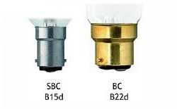
Распространены два типа присоединения:
1) BC = B22d диаметром 22 мм с двумя фиксирующими пальцами. Используется не только в лампах накаливания, но и в натриевых лампах низкого давления.
и
2) SBC = B15d то же, но диаметром 15мм. Применяется как в лампах накаливания, так и в галогеновых лампах низкого напряжения.
Винтовые электрические лампочки накаливания и "энергосберегающие".
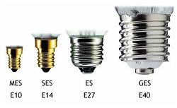
В мире они известны как лампочки с присоединением "винт Эдиссона" = Edison Screw =ES. Это самое рапространенное присоединение для электрической лампочки.
Из ES самым распространенным патроном является E27, диаметром 27 мм - обычная лампочка в РФ да и в мире. E14 = SES = "миньон" находится на втором месте по распространенности. E12 = CES встречается на импортных и дизайнерских люстрах с большим количеством ламп. Еще более редким типом является E10 = MES, авторы проекта видели их в детстве на елочных гирляндах.
Тип E40 = GES редко встречается в доме, в основном эти лампы используются в полупромышленных применениях, НО имеющие на даче, или на участке уличный фонарь на столбе сразу их впомнят. Не совпадает с предельно похожим американским типом E39 = Mogul Screw диаметром 39 мм - написано на всякий случай. Размеры E11, E17 и E26 практически не используются в РФ.
Таблица: винтовые электрические лампочки накаливания и "энергосберегающие".
| Обозначение | Диаметр | Полное английское наименование | Британское сокращение |
| E5 | 5 мм | Lilliput Edison Screw | LES |
| E10 | 10 мм | Miniature Edison Screw | MES |
| E12 | 12 мм | Candelabra Edison Screw | CES |
| E14 | 14 мм | Small Edison Screw | SES |
| E27 | 27 мм | Edison Screw | ES |
| E40 | 40 мм | Giant Edison Screw | GES |
Галогеновые мини лампочки и прожекторные трубки.
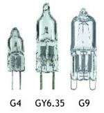
Миниатюрные галогеновые инкапсулированные лампочки обычно специфицируются расстоянием между пинами (контактами). Легко догадаться, что G4 имеет таковым 4 мм и т.д. Типы G4 и GY6.35 обычно предназначены для низковольтных применений, а G9 для сетей 220 В.
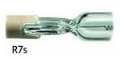
Галогеновые трубки для прожекторов обычно оснащены 7 мм разъемами R7s с каждой стороны.
Галогеновые лампочки направленного света.
Большинство галогеновых лампочек направленного света крепятся на 2 пина (штыря) (GU4 и GU5.3, где цифры - расстояние между контактами в мм - это на низковольтные применения (GU10 или GZ10 по 10 мм - это на 220 В, обычно). Внимание! между GU10 и GZ10 есть существенное отличие. На GU10 есть фаска вокруг ножки, а у GZ10 угол прямой. Таким образом, GZ10 нельзя использовать в патроне для GU10, а GU10 моджет быть установлена в оба патрона.
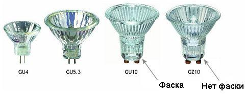
Флюоресцентные (люминисцентные) трубки.Большинство таких ламп имеют присоединение "два пина" - два контакта с каждой из сторон лампы.
Стандартные размеры трубок T8 (диаметр 25 мм) и T12 (диаметром 38 мм) оба имеют присоединение G13 - 13 мм между пинами.
Менее распространенные трубки T5 (диаметр 16 мм) имеют присоединение G5 - 5 мм между пинами.
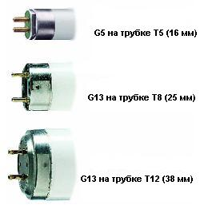
Дополнительная информация к обзору флюоресцентные (люминисцентные) трубки.
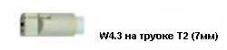
Очень тонкая трубка T2 ( диаметром 7 мм) имеет разъем W4.3 с "разеткой" с расстоянием 4.3 мм между отверстиями T2 tubes.
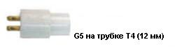
Трубки T4 (диаметром 12 мм) имеют разъем G5 с расстоянием 5 мм между пинами.
Лампы накаливания - "дневного света"
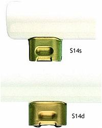
Такие лампы обычно имеют одно из двух возможных присоединений: S14s, устанавливаемый на одном из концов лампы, или тип S14d, устанавливаемый в центре лампы.
Традиционные (музейные) лампы накаливания - "дневного света" обычно имеют присоединение диаметром 15 мм типа S15s на обоих концах лампы.
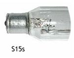
Компактные флюоресцентные (люминисцентные) лампы. Встречаются нечасто, но могут попасться.Однотрубные компактные флюоресцентные (люминисцентные) лампы = одна трубка с газом.
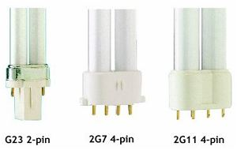
Двухтрубные компактные флюоресцентные (люминисцентные) лампы = две трубки с газом.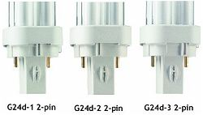
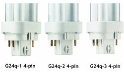